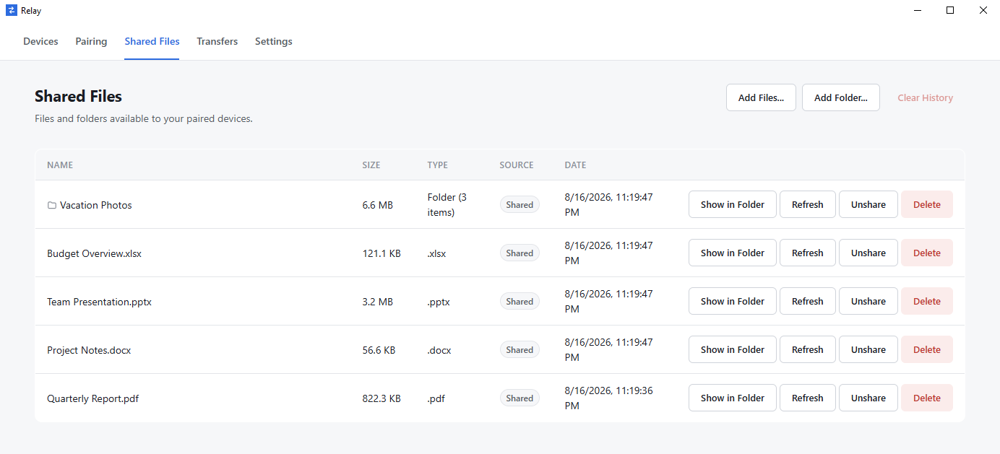
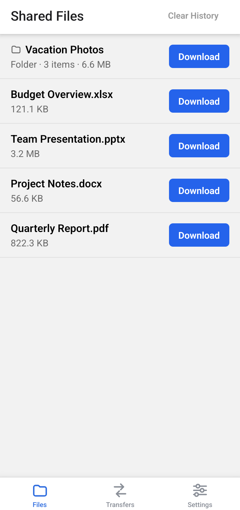

Relay
Local file transfer between Windows and Android.
Relay sends files directly between your PC and your phone over the same
Wi-Fi network or hotspot.
No cloud storage, No account, and No internet server in between.
Windows installer and Android APK, published via GitHub Releases once the first release is live.
How Relay works
Three steps between opening the app and sending your first file,
all of it stays on your own network.
-
Discover
Open Relay on your PC and phone while they're on the same Wi-Fi network or hotspot. The Android app finds the desktop automatically — there's no IP address to type in.
-
Pair
Scan the QR code shown on the desktop. Relay asks you to approve the request on the PC before the phone is trusted nothing connects without that confirmation.
-
Transfer
Send or receive files and folders directly between the two devices. Transfers move straight over the local network no server or cloud storage sits in between.
See Relay in action
The desktop and Android apps side by side, both showing the same shared files.


Features — built in P52.5
Download — built in P52.5
Installation — built in P52.5
Requirements & limitations — built in P52.5